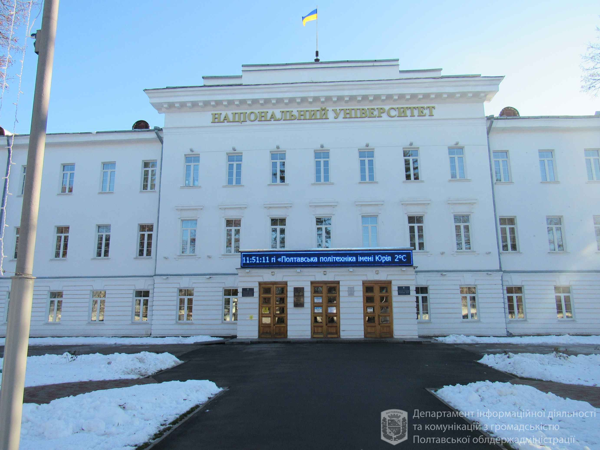
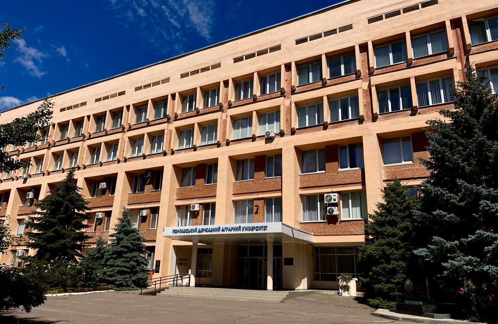
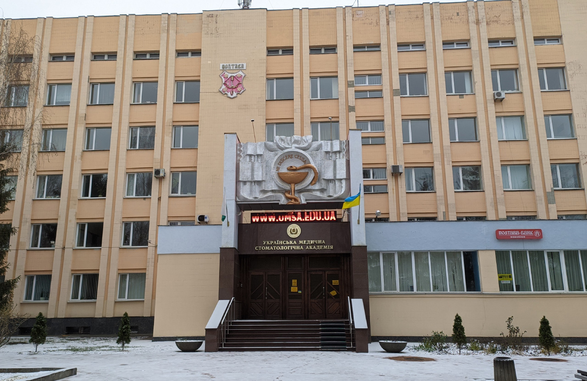
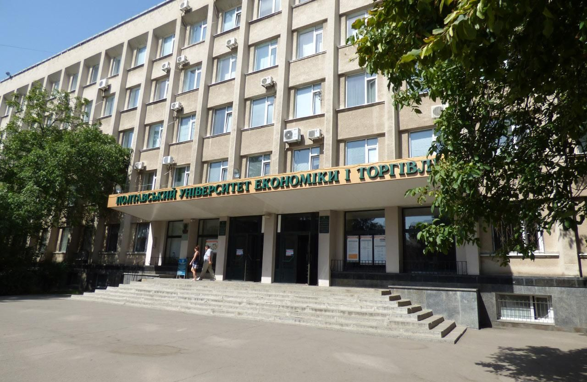
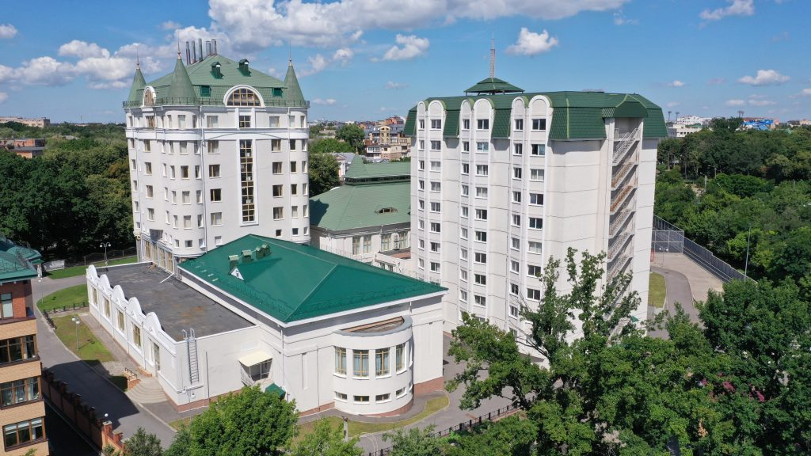

Полтава – мальовниче українське місто, з великою кількістю різноманітних пам'яток. Іванова гора, Успенський собор, музей-садиба Івана Котляревського, Біла альтанка, пам'ятник галушці – це лише неповний список того, що варто побачити на власні очі. Місцеві жителі кажуть, що Полтава – культурна столиця України, місто, в якому хочеться жити. На Полтавщині жили і творили Микола Гоголь, Іван Котляревський, Григорій Сковорода та інші видатні люди.
Тут багато цікавих місць на будь-який смак. Цінителям історії варто зазирнути до Краєзнавчого музею та музею авіації, любителі містики і таємниць прийдуть в захват, побачивши так званий Будинок чаклуна на вулиці Пушкіна. А ті, кому до смаку красиві пейзажі, можуть прогулятися по дендропарку. Полтава славиться галушками – стравою, яку прославив на весь світ український письменник Гоголь. У меню більшості місцевих ресторанів є даний смаколик, причому, в кожному закладі він готується по-своєму.
Словом, гостям Полтави точно не доведеться нудьгувати, скільки б часу вони не провели в місті. Тут є все для цікавого і приємного проведення часу: готелі та хостели, кафе і ресторани, маса пам'яток і, звичайно ж, особлива атмосфера, відчувши яку, з Полтави не захочеться їхати.
Місто розташоване у східній частині Полтавщини на обох берегах річки Ворскли та є одним з найбільших промислових і культурних центрів Лівобережного Придніпров'я. Полтава лежить в межах великої Східноєвропейської рівнини, на рівнинному Полтавському плато і його крутому прирічковому схилі. Більша, західна частина міста лежить на порівняно високому (150...159 м над рівнем моря) вододільному плато, розчленованому біля долини Ворскли досить глибокими балками на ряд плосковерхих виступів (Монастирський, Інститутський, Кобищанський, Іванова гора). Менша, східна частина міста (Поділ, Левада, Дублянщина) розміщена на заплаві і частково першій терасі річки Ворскли. Тут переважають абсолютні висоти від 78 м до 100 м над рівнем моря. Із сходу місто обмежене долиною річки Коломак поблизу її гирла.
Офіційним часом заснування Полтави згідно з археологічними дослідженнями вважається 899 рік. Засноване у IX столітті сіверянами як форпост поперед Посульської лінії укріплене першопоселення на Івановій горі поклало початок розвитку давньоруського града Чернігівського, а згодом Переяславського князівств Х—ХІІІ століть, поселенням XIV, XV століть. Наявні археологічні свідчення погрому поселення дружиною Бориса Володимировича на початку XI століття.
Першу літописну згадку про місто містить Іпатіївський список «Повісті минулих літ» 1174 року. Монголо-татарська навала 1240 року не завдала шкоди Полтаві: жодних тогочасних руйнувань не виявлено. Уважається, що тогочасний град був знищений 1399 року після битви з ординцями Тімур-Кутлука.
Згідно з родоводом Глинських, складеним у XVI столітті, згадується Полтава, що перебувала тоді під владою литовського князя Вітовта, який нібито передав її в правління князю Олександру Глинському. 1482 року на місто здійснив набіг хан Менґлі I Ґерай. Від 1503 Полтава належала князю Михайлу Глинському. 1508 року її в нього відібрав король Сигізмунд I за участь в антиурядовому повстанні, однак пізніше її знову повернуто родині Глинських. У 1537 господарем міста став зять Глинських — Байбуза. А втім, ці відомості вважаються недостовірними.
Продовження історії Полтавщини можна прочитати тут.





